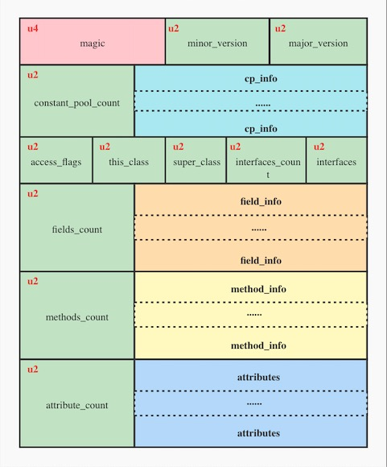

ClassFile { u4 magic; u2 minor_version; u2 major_version; u2 constant_pool_count; cp_info constant_pool[constant_pool_count-1]; u2 access_flags; u2 this_class; u2 super_class; u2 interfaces_count; u2 interfaces[interfaces_count]; u2 fields_count; field_info fields[fields_count]; u2 methods_count; method_info methods[methods_count]; u2 attributes_count; attribute_info attributes[attributes_count]; }
1.3 图形化表示

1.4 示例
1 2 3 4 5 6 7 8 9 10 11 12 13 14 15 16 17
publicinterfaceCar{ voiddrive(); }
publicclassBMWCarimplementsCar{
private String name; publicBMWCar(){ name = "宝马"; } @Override publicvoiddrive(){ System.out.println("BMW car drive." + name); } }
CONSTANT_Fieldref_info { u1 tag; u2 class_index;//索引值 u2 name_and_type_index; }
字段的符号引用
10
CONSTANT_Methodref_info
CONSTANT_Methodref_info { u1 tag; u2 class_index;;//索引值 u2 name_and_type_index; }
类中方法的符号引用
11
CONSTANT_InterfaceMethodref
CONSTANT_InterfaceMethodref_info { u1 tag; u2 class_index;;//索引值 u2 name_and_type_index; }
接口中方法的符号引用
12
CONSTANT_NameAndType_info
CONSTANT_NameAndType_info { u1 tag; u2 name_index; u2 descriptor_index; }
接口中方法的符号引用
三、字段的结构
每一个字段用一个 field_info的结构体表示
1 2 3 4 5 6 7
field_info { u2 access_flags; u2 name_index;//指向常量池的index，表示字段名 u2 descriptor_index;//指向常量池的inde，字段的描述符 u2 attributes_count; attribute_info attributes[attributes_count]; }
四、方法的结构
1 2 3 4 5 6 7
method_info { u2 access_flags; u2 name_index; u2 descriptor_index; u2 attributes_count; attribute_info attributes[attributes_count];//Code字节码信息 }
五、属性的结构
1 2 3 4 5
attribute_info { u2 attribute_name_index; u4 attribute_length; u1 info[attribute_length]; }